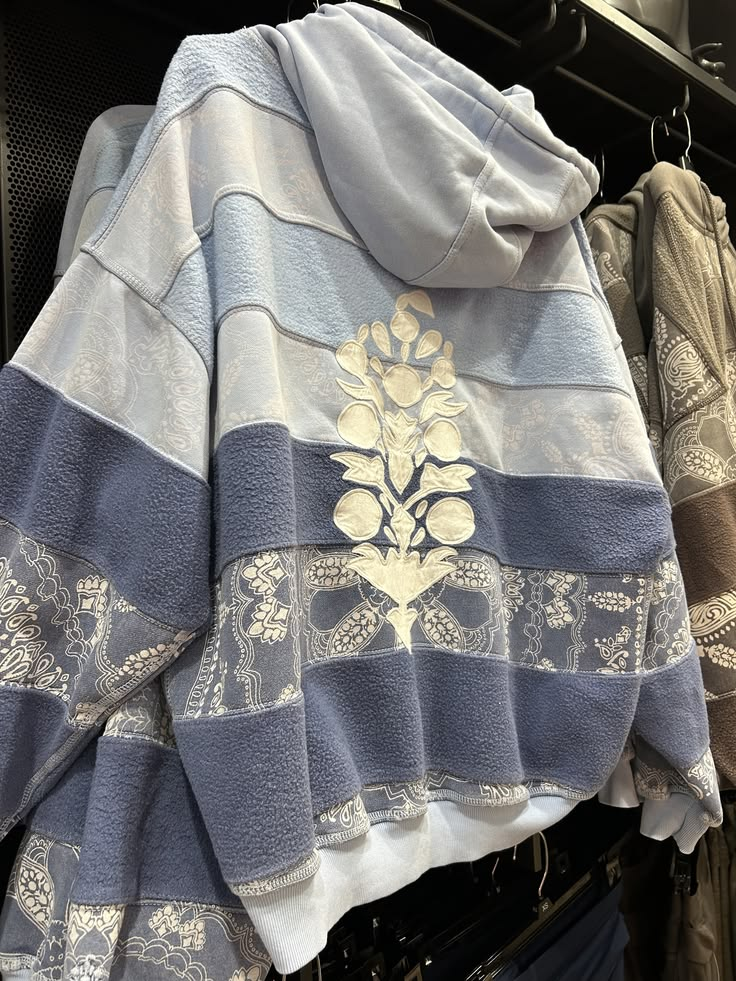
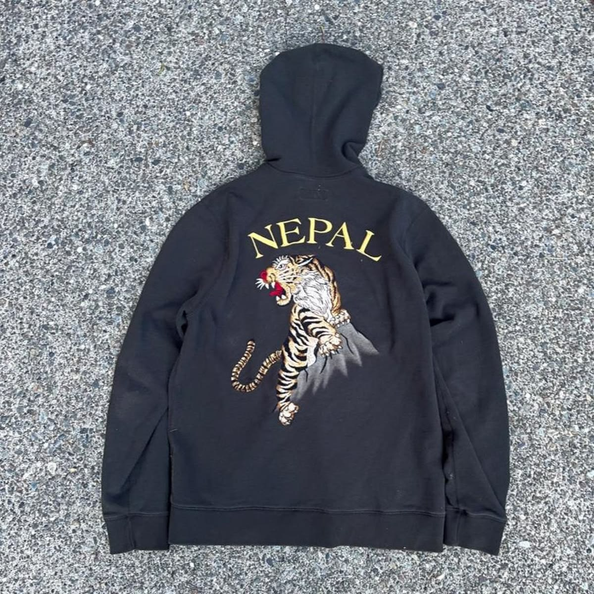
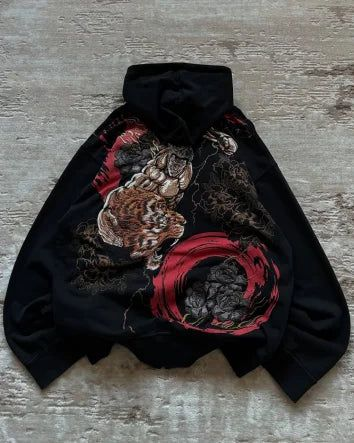
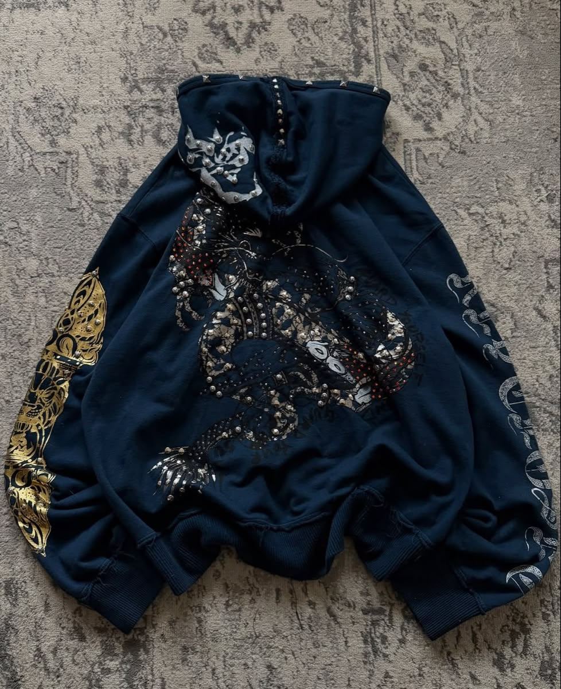

Heritage Floral
Soft color-block style with delicate floral embroidery.
Fabric: Cotton-rich fleece
Thickness: Medium weight
MADE BY HAND IN NEPAL
Meet Sonam: everyday hoodies made with care, inspired by the colors, craft, and welcoming spirit of Nepal. Comfortable to wear, easy to love, and made at a fair, reasonable price.
Thoughtfully made here at home, for wherever life takes you.
SONAM HOODIE · HANDMADE IN NEPAL
Soft, cotton-rich fleece on the outside.
A gentle brushed feel inside for everyday warmth.
Cut, stitched, and finished by hand in Nepal.
Ribbed cuffs and hems make each hoodie ready for daily wear.
Our designs take inspiration from Nepali colors, craft, and heritage.
Floral embroidery and tiger artwork give each hoodie its own character.

Soft color-block style with delicate floral embroidery.
Fabric: Cotton-rich fleece
Thickness: Medium weight

Classic black hoodie with bold Nepal lettering and tiger artwork.
Fabric: Cotton-rich fleece
Thickness: Medium weight

Dark, expressive artwork with rich red accents.
Fabric: Cotton-rich fleece
Thickness: Medium weight

Deep navy color with detailed decorative stitching and artwork.
Fabric: Cotton-rich fleece
Thickness: Medium weight
SOFT COTTON BLEND · HAND FINISHED · FAIRLY PRICED
“Inspired by the warmth of a Nepali home and made for everyday adventures.”
— Sonam Hoodie, made with care in Nepal